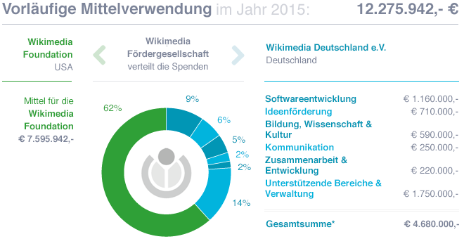

Die Organisation
Wikimedia besteht in Deutschland aus zwei Organisationen: Wikimedia Deutschland e.V. (WMDE) und dessen 100%iger
Tochtergesellschaft "Gemeinnützige Wikimedia Fördergesellschaft mbH" (WMFG). Die Fördergesellschaft
ist
Empfängerin der Spenden.
Sie hat den Zweck, Gelder an die US-amerikanische Wikimedia Foundation (WMF) zum Betrieb und Ausbau der Wikimedia-Projekte und für internationale Programme weiterzuleiten. Ebenso leitet die Fördergesellschaft Gelder an den Wikimedia Deutschland e.V. weiter, der die Projekte des Vereins ausführt.
Mittel für die Wikimedia Foundation
Die Betreiberin der Wikimedia-Projekte nutzt die Spenden für Produktentwicklung, Technik, internationale
Unterstützung und Aktivitäten rund um die Wikipedia.
Softwareentwicklung
hat das Ziel, die Qualität der Wikimedia-Projekte zu erhöhen und ihre Bedienung zu erleichtern.
Deshalb sorgt
das
Team für stetige Verbesserung der Software rund um die Wikimedia-Projekte
und entwickelt neuartige Lösungen, um auf die Bedürfnisse der vielen Communitys zu reagieren.
Ideenförderung
unterstützt die Freiwilligen in Form von Stipendien oder Reisekostenerstattungen, verleiht technische
Ausrüstung,
um das Aufnehmen von Fotos, Videos und Tönen zu ermöglichen und leistet
logistische, administrative und organisatorische Hilfe bei der Durchführung von Community-Veranstaltungen.
Bildung, Wissen und Kultur
hat die Aufgabe, im Bildungs-, Wissenschafts- und Kulturbereich durch Austausch und Veranstaltungen für
freie
Inhalte zu werben. Außerdem werden Forschungs- und Entwicklungsvorhaben
initiiert und innovative Projekte unterstützt.
Kommunikation
hat die Aufgabe, Wikimedia Deutschland bei der Kommunikation seiner Ziele und Aufgaben zu unterstützen.
Dazu
gehören Einzelbotschaften wie auch das Gesamtbild des Vereins – nach außen wie innen.
Zusammenarbeit und Entwicklung
kümmert sich um Partnerschaften zur Umsetzung gezielter Projektvorhaben und sorgt für die Steuerung
und
Verknüpfung der einzelnen Projekte des Vereins. Durch Monitoring und Evaluation wird
zudem Wirkung und Zielerreichung der Projekte verbessert. Dafür wird eine wirkungsorientiertes
Monitoringsystem
aufgebaut.
Unterstützende Bereiche und Verwaltung
Veranstaltungsmanagement, IT, Präsidium, Vorstand, Verwaltung und Finanzen